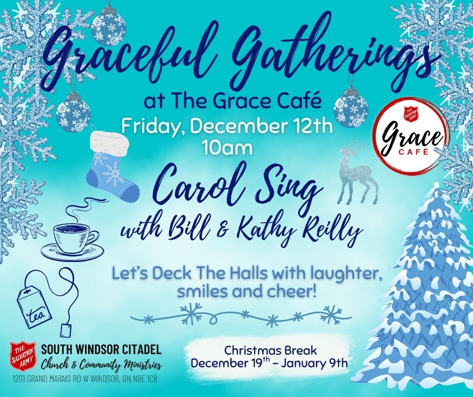
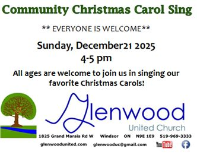

Carol Sing-Alongs Windsor 2025
Participatory sing-along events to belt out Christmas carols together
|
📅 Fri, Dec 12, 2025 • 10:00 AM
📍 1201 Grand Marais Road West, Windsor, ON
|
 |
- • 9 Bible readings that tell the Christmas story
- • In between the readings: a mix of choirs performing & everyone singing carols together
- • @ Lessons & Carols you're part of the Christmas story, not just watching it unfold
- • This event was renewed after the collective trauma of World War I to help people reconnect & rebuild community
Emmanuel United Church Choir presents a celebration of Christmas lessons and carols featuring a 60-voice choir (Emmanuel United Church Choir and Friends + Windsor Essex Youth Choir) and 5-piece ensemble. Music Director Nicholas Morvay leads an evening of music to fill you with the Christmas spirit, including some sing-along carols. Suggested donation $15 per person at the door.
Event details on Facebook
An evening of readings and Christmas Carols. Everyone welcome,
Event details on websiteBuddy: Oh, it's easy, it's just like talking—except louder and longer and you move your voice up and down. ~ (Elf the movie)
- • 9 Bible readings that tell the Christmas story
- • In between the readings: a mix of choirs performing & everyone singing carols together
- • @ Lessons & Carols you're part of the Christmas story, not just watching it unfold
- • This event was renewed after the collective trauma of World War I to help people reconnect & rebuild community
A Traditional Service of Nine Lessons and Carols. Hear the foretelling of the Birth of Christ through Scripture and Song. Freewill offering.
|
📅 Sun, Dec 21, 2025 • 4:00 PM - 5:00 PM
📍 1825 Grand Marais Road West, Windsor, ON
All ages are welcome to join us in singing our favourite Christmas carols |
 |
About This Guide
After years of carol sing-along filled Decembers in Edmonton, I wondered if similar experiences were available in Windsor too. This guide is proof the answer is YES! I'm looking forward to singing along and co-creating some Christmas cheer with you. ~ Steve Grubich